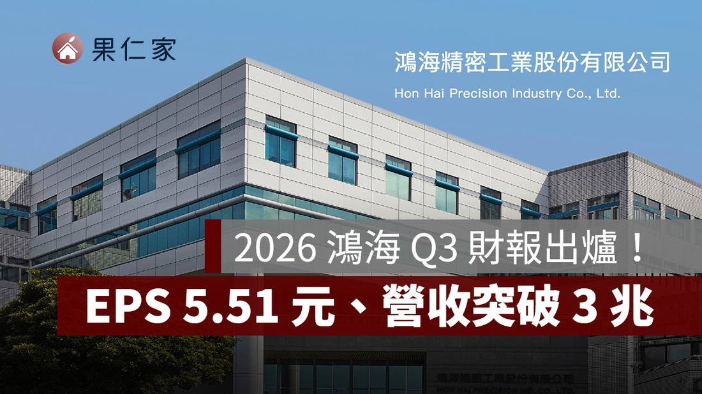

Foxconn Q3 Profit Jumps 34% to NT$77.5 Billion, Beating Forecasts on AI Server Demand
Foxconn reported third-quarter net profit of NT$77.5 billion ($2.35 billion), up 34% year on year and ahead of the LSEG consensus of NT$69.6 billion, as AI server demand kept climbing. Revenue was NT$3.02 trillion, up 46%, EPS came in at NT$5.51, and operating profit rose 64%. Cloud and networking products were 54% of revenue. The company held its "strong" full-year revenue growth forecast and predicted high double-digit growth in AI rack shipments in 2027.

- 01THE BEAT — Net profit of NT$77.5 billion, up 34% year on year, beat the LSEG consensus of NT$69.6 billion; revenue was NT$3.02 trillion, up 46%, and EPS came in at NT$5.51.
- 02THE MIX — Cloud and networking products, the division that includes AI servers, were 54% of revenue; operating profit rose 64% while gross margin slipped to 6.02% from 6.35% a year earlier.
- 03THE OUTLOOK — Foxconn held its "strong" full-year revenue growth forecast, raised its full-year outlook, and predicted high double-digit AI rack shipment growth in the fourth quarter and in 2027.
WHAT HAPPENEDWhat Happened
Foxconn, formally Hon Hai Precision Industry, reported third-quarter net profit of NT$77.5 billion ($2.35 billion), up 34% year on year and ahead of the LSEG consensus estimate of NT$69.6 billion, Reuters reported on November 12, 2026. The year-earlier figure was NT$57.7 billion. Revenue for the July to September period was NT$3.02 trillion, up 46% year on year, and earnings per share came in at NT$5.51, up 33% from NT$4.15 a year earlier, according to the company's investor briefing deck.
The profit beat was driven by AI servers. Operating profit rose 64% year on year to NT$115.35 billion, while gross profit rose 39% to NT$181.5 billion. Cloud and networking products, the division that includes AI servers, accounted for 54% of third-quarter revenue, ahead of consumer smart products at 29%. Gross margin slipped to 6.02% from 6.35% a year earlier, but operating margin improved to 3.83% from 3.43%, as scale outpaced the margin pressure from the product mix.
Foxconn stuck to its previous forecast of "strong" revenue growth for the year and said it saw strong AI demand throughout this year and into next, Reuters reported. The company predicted "high double digit growth" in 2027 for AI rack shipments, with fourth-quarter AI rack shipments also expected to rise at a high double-digit rate from the third quarter. It also raised its full-year outlook, with all four product areas now expected to grow year on year, though it gave no numeric full-year forecast. The company holds its earnings call later on Thursday in Taipei.
The result caps a quarter in which Foxconn's AI server business kept setting records. In October the company reported third-quarter revenue of T$3.03 trillion, up 47% year on year, with September alone at a record T$1.16 trillion. Foxconn, Nvidia's biggest server maker and Apple's top iPhone assembler, is building factories in Mexico and Texas to make AI servers for Nvidia. Its shares closed 0.8% lower on Thursday ahead of the release and are up 4% so far this year, against a 49% gain for the broader Taiwan index.
WHY IT MATTERSThe beat is real, and the margin split tells the story
A 34% profit jump on 46% revenue growth is the clearest print yet that AI server demand is converting into profit, not just top-line volume. Operating profit growing 64%, faster than revenue, shows the AI server ramp is carrying operating leverage even as the company scales factories in Mexico and Texas.
The margin split is the detail to watch. Gross margin slipped to 6.02% from 6.35% a year earlier, a sign that the fast-growing AI server business carries thinner margins than the iPhone assembly it is displacing in the mix. Operating margin still rose, to 3.83% from 3.43%, because scale and cost control offset the mix drag. The beat rests on volume and efficiency, not pricing power, and that is a thinner cushion if AI server pricing comes under pressure.
WHAT TO WATCHThe call, the racks, and the 2027 guide
The earnings call later on Thursday in Taipei is the next test, with analysts likely to press management on AI rack shipment volumes, the margin path, and the cash behind the ramp: the briefing deck showed operating cash flow at a net outflow for the first nine months, with heavy capital spending alongside it.
The number to hold Foxconn to is the 2027 AI rack guide. High double-digit shipment growth in both the fourth quarter and 2027 would keep the AI server story intact into next year; a shortfall would land just as the market is already discounting the stock, up only 4% this year against a 49% rise in the Taiwan index. The other watchpoint is the customer concentration behind the 54% cloud and networking share, which is dominated by Nvidia-linked demand.
SIGNAL JUDGMENT — ANALYSISAI servers are now converting into profit, not just revenue
Tokenta Signal's judgment: Foxconn's third quarter is the clearest print yet that AI server demand is converting into profit, not just revenue, with a 34% profit jump on 46% revenue growth and operating profit up 64%. But the margin split matters: gross margin slipped while operating margin rose, so the beat rests on scale and mix, not pricing power. The 2027 AI rack guide is the number to hold them to. If fourth-quarter shipments land the promised high double-digit jump, the AI server story stays intact into next year; if they miss, a stock that has trailed its own index by 45 points this year has little cushion.
WHAT REMAINS UNCERTAINWhat Remains Uncertain
EVIDENCEEvidence
Reuters report, read in full: Foxconn reported a 34% rise in third-quarter profit on Thursday, beating analyst forecasts on continued strong demand for AI. Net profit was T$77.5 billion ($2.35 billion), versus an LSEG consensus estimate of T$69.6 billion and T$57.7 billion a year earlier. The company predicted high double-digit growth in 2027 for AI rack shipments and will hold its earnings call later on Thursday in Taipei.
PRIMARY SOURCESPrimary Sources
- Reuters: Taiwan's Foxconn reports 34% rise in Q3 profit, beats forecasts
https://www.reuters.com/business/retail-consumer/taiwans-foxconn-reports-34-rise-q3-profit-beats-forecasts-2026-11-12/ - Apple Almond: 2026 Hon Hai Q3 results, citing Hon Hai's November 12 investor briefing deck
https://applealmondrealty.com/posts/54981